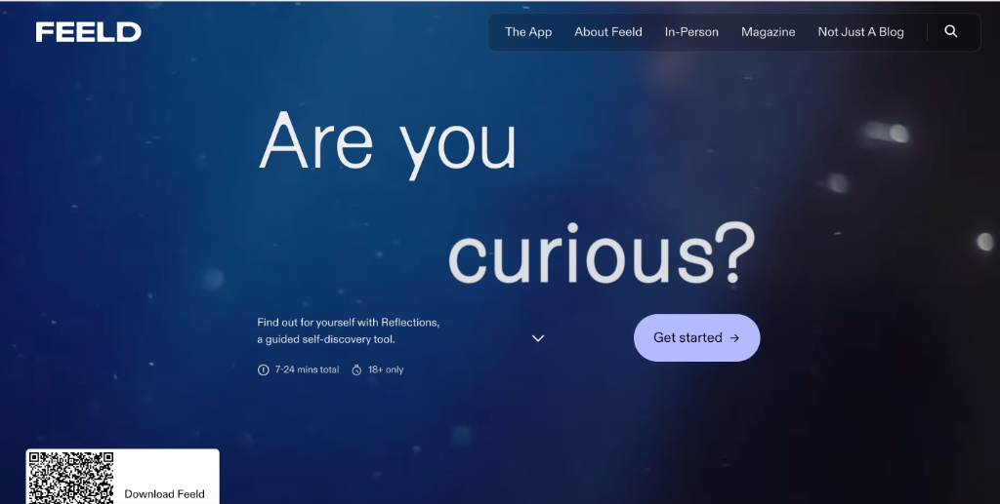

A record of podcasts, video features, and press coverage of my research and public scholarship, organized below by type, most recent first. Full details for any entry are available on request at jasbanks@umich.edu.
Applied Research & Industry Collaboration

Reflections, with Feeld
Jasmine Banks contributed research to the development of Reflections, a self-reflection feature built into the dating app Feeld. The collaboration informed Feeld's first research report, State of Reflections Vol. 1, on the gap between how people actually desire and date and what society labels normal.
View Reflections on Feeld · Read the press release · Read the full LSA feature